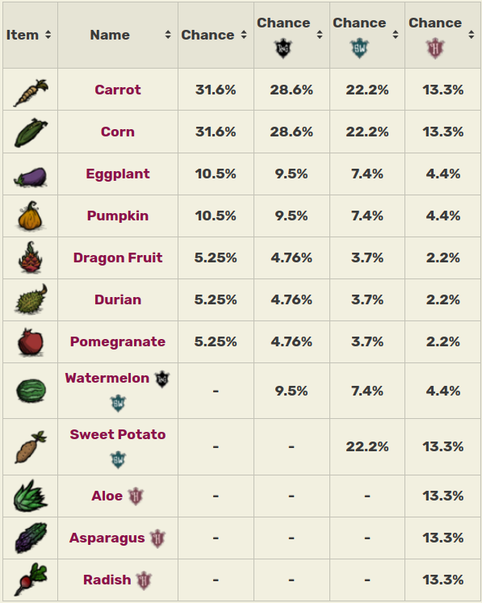

How to Farm
A Farm or Farm Plot is a Structure used for Farming in Don't Starve.
Seeds planted in a Farm will grow a Fruit or Vegetable at random.
Possible crops include Carrots, Corn, Eggplants, Pumpkins, Dragon Fruits, Durians and Pomegranates.
Specific crops can be grown by using Crop Seeds.
The speed at which the crops grow depends on the world temperature, availability of light, and Rain.
Farms deplete after a number of harvests, and they need to be fertilized to grow more crops.
Growing crops can be fertilized to speed up their growth.
This fertilization only affects the crops, and will not affect the fertilization status of the Farm itself.
During Winter, the crops will not grow, however, during the first and last few days of Winter,
the temperature is warm enough to allow fertilizing the crops to work, even though they won't grow on their own.
When the world temperature is over 28 degrees, the crops grow twice as fast. Crops only grow in the presence of light;
at nightfall, they stop growing until the following sunrise, unless they are near a light source. If a crop has finished growing,
it will not spoil in the Farm if not harvested. Like any other structure, Farms can be destroyed using a Hammer or a Deconstruction Staff.
There are two kinds of Farms.
Farms are made by creating
Basic {

}
or
Improved Farms {

}
which are fertile patches of ground where Vegetables can be grown.
Once built,
Seeds {

}
can be planted in them which will grow into random vegetables,
or Crop Seeds for specific crops. Some Vegetables grown
from regular Seeds appear more frequently than others (see table, below).
